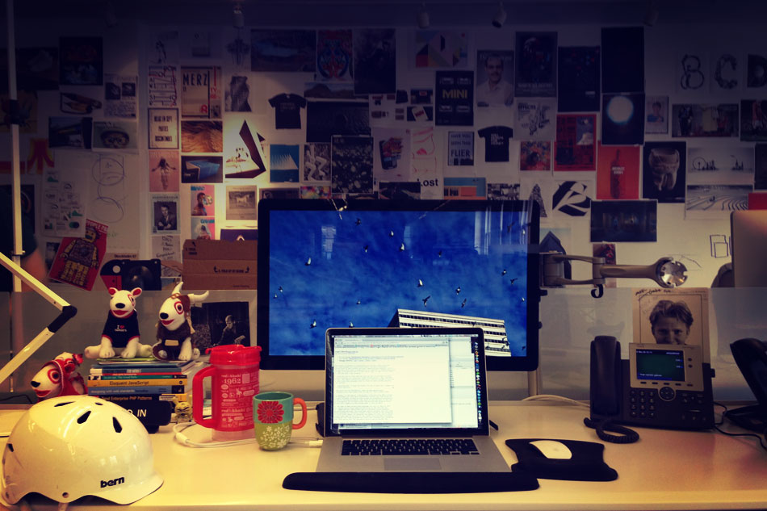

Remember the old days?
- Flash and keyboard navigation
- Flash and screen readers
- Flash and SEO
Now we write JavaScript. Hooray!
How do we not repeat the same mistakes?
What is accessibility?
W3.org
The Web is fundamentally designed to work for all people, whatever their hardware, software, language, culture, location, or physical or mental ability.
Who are we talking about?
- Blind & Vision Impaired
- Deaf & Hard of Hearing
- Impaired Mobility
- Color-Blind
- Learning Disabled
- AND EVERYONE ELSE
Problematic Items
- The presence of inaccessible Flash content
- CAPTCHA - images presenting text used to verify that you are a human user
- Links or buttons that do not make sense
- Images with missing or improper descriptions (alt text)
- Screens or parts of screens that change unexpectedly
- Complex or difficult forms
- Lack of keyboard accessibility
- Missing or improper headings
- Too many links or navigation items
- Complex data tables
- Inaccessible or missing search functionality
- Lack of "skip to main content" or "skip navigation" links
Content is more than just visible
- Semantic HTML markup
- Headings
- Form labels
- Image alt text
- Offscreen text
”Click here” means nothing
- Unique link text: good

Hidden vs. Offscreen
Styles
.reallyHidden
display: none
visibility: hidden
.offscreen
display: block
left: -50000px
position: absolute
Keyboard navigation
It doesn’t have to suck.
Keyboard navigation
Any element can receive focus with a little help.
<div class="navigate-right" tabIndex="0">Next Slide</div>
$('.navigate-right').on 'click keypress', (event) ->
if event.type == 'click' || event.keyCode == 13
navRightClicked()
Skip Links
Skip Links
They’re useful for everyone.
$('.skip-links').find('a').on 'focus blur click', ($event) ->
$(this).css({'left':'0'}) if $event.type == 'focus'
$(this).css({'left':'-999999px'}) if $event.type == 'blur'
if $event.type == 'click'
$event.preventDefault()
$(this).attr('href').focus()
Mega-menus
Mega-menus
Really hide invisible panels
a.nav-item-primary
color: red
display: block
nav.nav-secondary
display: none
visibility: hidden
&.open
display: block
visibility: visible
About
expand
Mega Menus
live example on codepen.io
$('a.nav-item-primary').on 'click', ($event) ->
$event.preventDefault()
$navSecondary = $(this).next('.nav-secondary')
$accessLabel = $(this).children('.offscreen')
if $navSecondary.hasClass('open')
$navSecondary.removeClass('open')
$accessLabel.text(' expand')
else
$navSecondary.addClass('open')
$accessLabel.text(' collapse')
Interactive Tiles
Interactive Tiles
VERSION 1
Both sides are "visible"Interactive Tiles
VERSION 2
One side is "visible" at a timeTile 1
Go to Tile 1 backTile 1 Back
Go to Tile 1 frontTile 2
Go to Tile 2 backTile 2 Back
Go to Tile 2 frontTile 3
Go to Tile 3 backTile 3 Back
Go to Tile 3 frontAccessible Reveal.js
- "Really hidden" slides
- Tab-enabled arrows
- Skip links plugin
So. Meta.
Mobile
@marcysutton iPhone was the 1ST piece of tech I could use out of the box. Normally need sighted help to get screen reader installed etc.
— Steve Sawczyn (@steveofmaine) October 11, 2013
@marcysutton If you think about it, I can't even buy and use a microwave until someone helps me label touchpad.
— Steve Sawczyn (@steveofmaine) October 11, 2013
Should your mobile site
be accessible?
YES.
(That could be an entire talk.)
What else?
- ARIA
- Captchas
- Video
It’s About User Experience.
Let's make it better.